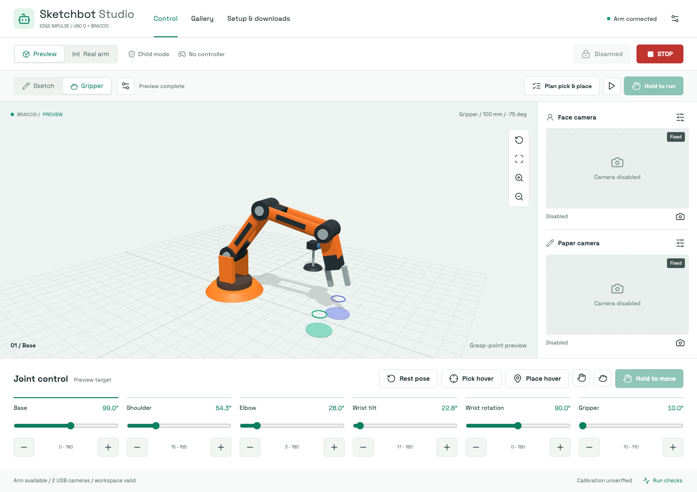

Android tablet
Controller screen + photo capture
Android 7+ / APKView releasesARDUINO UNO Q / BRACCIO

Default: no firmware flash, no motion. A fitted tool, clear workspace and adult supervision are required for physical use.
ssh arduino@<uno-q-hostname>Controller screen + photo capture
Android 7+ / APKView releasesBrowser launcher installation
Per-user / MSIView releasesHome-screen web launcher
Safari / Chrome / EdgeCode, installer & bundled interface
Linux / TAR.GZView releasesChecking published packages
APK: signed sideload, not Google Play. MSI: unsigned browser launcher. Adult supervision is required for physical robot use.
Use the same Wi-Fi for tablets and the UNO Q. For off-site access, use a private VPN or authenticated HTTPS connection. Do not port-forward the robot control service.